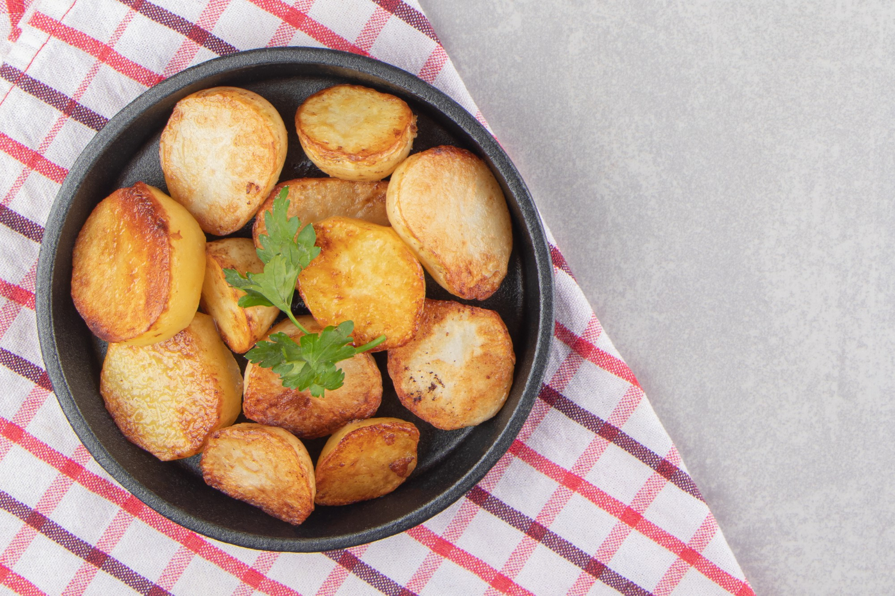

Home
Baked potatoes

Description
Baked potatoes are a simple, hearty dish with a crispy skin and fluffy interior.
They can be served plain, with butter and salt, or topped with cheese, sour cream, and chives.
Perfect as a side dish or a comforting meal on their own.
Ingredients
- Potatoes: Russet potatoes are best for baking due to their starchy texture.
- Olive oil: Coats the skin, helping it become crispy during baking.
- Salt: Enhances flavor and crisps the skin.
- Butter: Adds richness when served.
- Sour cream: Creamy topping that complements the fluffy potato.
- Cheese: Shredded cheddar or other melty cheeses add flavor.
- Chives or green onions: Fresh garnish for color and mild onion flavor.
- Bacon bits: Optional, for a smoky, savory topping.
Steps
- Prepare the potatoes
- Scrub and dry the potatoes thoroughly.
- Pierce each potato with a fork several times.
- Rub with olive oil and sprinkle with salt.
- Bake the potatoes
- Preheat the oven to 425°F (220°C).
- Place the potatoes directly on the oven rack or on a baking sheet.
- Bake for 45–60 minutes, until the skins are crisp and the centers soft.
- Serve
- Cut open each potato and fluff the insides with a fork.
- Add butter, sour cream, cheese, chives, and bacon bits as desired.
- Serve hot.